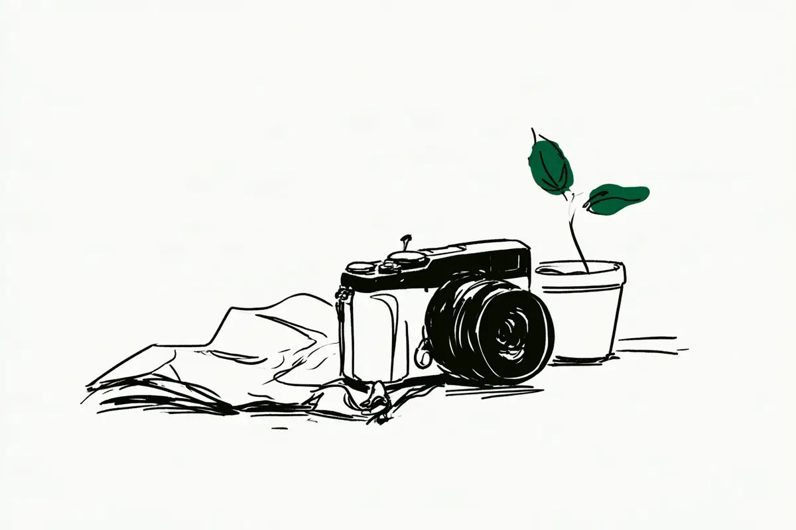

この記事には広告(アフィリエイトリンク)が含まれます。
現在地: 買う前に迷ってる
ソニー α6700の後悔・デメリット、買った人の不満と手放した理由

ソニー α6700を自分で買った・使っていると書いた49人のうち、手放したと書いた人は14人(1人はのちに買い直し)、別の機種に替えたとだけ書いた人が1人でした。15人の理由は、フルサイズ機が欲しくなった(3人)、ほかの機種と役割が重なった・1台にまとめた(3人)、荷物の多さやスマホで足りること(2人)、出番がなかった・ファインダーの位置(1人ずつ)などです。手放した側の候補から先に読んだので、割合としては読めません(数え方の偏り)。
このサイトの基準(後悔・使わなくなった・無駄だった)で後悔の側に入るのは4人です。自分のα6700について「後悔」の語を使ったのはYUMAさん(カメラの紹介もしているサイトです)の1人で、最初の1台をフルサイズ機にすればよかった、という振り返りでした。残る3人は、出番や撮る機会が減ったと書いた人で、2人が手放し、1人が買い替えを考えています(後悔の節)。
α6700(a6700、型名ILCE-6700)は、ソニーが2023年7月に発売したミラーレス(言葉の意味)です。センサーはAPS-C(フルサイズより小さい規格。言葉の意味)で、のぞき窓(電子ビューファインダー。言葉の意味)と本体の手ブレ補正があります。同じソニーのα6400・α6600・α6100・ZV-E10 II・FX30は別の機種で、この記事では数えていません(数え方)。私はカメラを持っていないので、人の声を集めて整理する側で、買う・買わないはすすめません。
- まだ買う前で、後悔しないか知りたい → 早見表、後悔の側の4人、手放した・替えた人、初心者・最初の1台の人、α6400との違い
- 買ったばかりで、重さや熱が気になる → 重さの節、熱の節、ファインダー・操作の節、バッテリーなど
- 使っていて出番が減ってきた、フルサイズが気になる → 出番がなくて手放した人、フルサイズへ移った人、買い足した人・買い替えを考えている人
目次
- ソニー α6700のデメリット・欠点の早見表: 不満の種類、人数、その人がどうしたか
- ソニー α6700で後悔の側に入る4人: 「後悔」と書いた1人と、出番や撮る機会が減った3人
- ソニー α6700を手放した・替えた15人: 理由と行き先を、人ごとに
- ソニー α6700に別の機種を買い足した3人と、買い替えを考えている人
- ソニー α6700のデメリット「重い・大きい」: 公式の質量は約493g
- ソニー α6700のデメリット「熱で止まる(熱停止・熱暴走)」: 動画と長い撮影の話、公式には温度の設定
- ソニー α6700のデメリット「ファインダーの位置」「C1ボタン」: のぞき窓と操作
- ソニー α6700のそのほかのデメリット: バッテリー・フルサイズではない・写りと色・背面の画面・カードスロット・値段・連写
- ソニー α6700を書いた人の立場: 初心者・最初の1台と確定できたのは2人、不満の記述がなかった11人
- ソニー α6700の公式の数字と販売状況(2026年11月時点)
- 数え方と偏り
- ソニー α6700は買わない方がいい?読んだ範囲の答え
ソニー α6700のデメリット・欠点の早見表: 不満の種類、人数、その人がどうしたか
49人のうち不満を1つでも書いた38人を、1つの話題=1行で分けました。私の読み方で、1人が2つ以上に入ります。右の列はその人がどうしたかの内訳で、( )はそのうちカメラの紹介もしているサイトの書き手の人数です。
表の中の言葉の意味
| 種類(私の読み方) | 書いた人数 | その人がどうしたか(内訳) |
|---|---|---|
| 本体 | ||
| 重さ・大きさ・荷物(気軽に持ち出せない・前の機種より重い・自分には大きい・荷物が多い) | 8人 | 手放した3、手放したと書いていない5(1) |
| 写り・色(青っぽい・前の機種と色が違う・夜や暗い場所の写り) | 7人 | 手放した4(1)、買い足した1、手放したと書いていない2(1) |
| センサーの大きさ(フルサイズではない・フルサイズ機が欲しくなった) | 6人 | 手放した4(1)、手放したと書いていない2(2) |
| 操作・ボタン(C1ボタンやシャッターボタンが押しにくい・ピント位置を動かすレバーがない・操作が合わない) | 5人 | 手放した1(1)、買い足した1(1)、手放したと書いていない3(2) |
| ファインダー(のぞき窓が左肩にある・粗い) | 4人 | 手放した2(1)、手放したと書いていない2(1) |
| 熱(動画や長い撮影で止まる・電源が落ちる) | 4人 | 替えた1(1)、手放したと書いていない2、相談1 |
| バッテリー(期待ほど持たない・減りが早い) | 4人 | 買い足した1(1)、手放したと書いていない3(2) |
| 背面の画面(横に開いて回す方式より、傾くだけの方式がよい) | 3人 | 手放した1、買い足した1(1)、手放したと書いていない1 |
| カードスロットが1つ | 3人 | 手放した1、買い足した1(1)、手放したと書いていない1 |
| 値段(高い・前の機種との値段の差ほどの違いがない) | 3人 | 手放したと書いていない3(3) |
| 連写・電子シャッター(連写が弱い・押す前から記録する機能がない) | 2人 | 手放した1(1)、手放したと書いていない1(1) |
| 合わなかった・使っていて楽しくない(中身を書いていない人も) | 2人 | 手放した2 |
| そのほか(1人ずつ: AIを使うAFの効き目・歩きながらの動画の揺れ・届いてすぐのエラーと窓口の対応・シャッター音と写りの尖り・書き込みエラー・照明のちらつき・ソニー全体の色とメニュー・編集ソフトでの表示・最初の操作) | 9人 | 手放した4(1)、手放したと書いていない5(3) |
| 使い方 | ||
| 出番が減った・撮る機会が減った・行事のときだけになった | 4人 | 手放した1(1)、買い足した1(1)、手放したと書いていない2 |
| ほかの機種と役割が重なった・1台にまとめた | 3人 | 手放した3(2) |
| 知恵袋の相談 | ||
| キットのレンズ(フードとフィルターで写真の隅が暗くなる・暗い) | 1人 | 相談1 |
| 写り(スマホよりザラザラして見える) | 1人 | 相談1 |
並びは人数順ではなく、行の分け方で順位が変わります。良い点は入れていません。
49人の結果です。右の列は、カメラの紹介もしているサイトの書き手の人数です。
| 結果(私の読み方) | 人数 | うちカメラの紹介もしているサイトの書き手 |
|---|---|---|
| 満足(不満の記述なし) | 11人 | 7人 |
| 満足と不満の両方を書き、手放したとは書いていない | 17人 | 8人 |
| 別の機種を買い足した(α6700をその後どうしたか書いていない人を含む) | 3人 | 2人 |
| 手放したと書いた | 14人 | 5人 |
| 替えたとだけ書いた | 1人 | 1人 |
| 困りごとだけで、評価はない | 3人 | 0人 |
手放したと書いた14人のうち1人は、のちに中古で買い直しています。人数は集め方で決まった数です(数え方の偏り)。
ソニー α6700で後悔の側に入る4人: 「後悔」と書いた1人と、出番や撮る機会が減った3人
このサイトでは、後悔・使わなくなった・無駄だった、のどれかを本人が書いていれば後悔の側として数えます。当たるのは4人で、「後悔」の語を使った1人と、出番や撮る機会が減ったと書いた3人です。
「後悔」の語を自分のα6700について使ったのはYUMAさんです。スマホの次の最初の1台として、レンズキットを新品で買いました。買う時点でフルサイズ機と迷っていて、3か月目から憧れが強くなり、約半年でα7 IVに替えています。替えたことに悔いはない、としたうえで、こう続けました。
あるとすれば「最初から思い切ってフルサイズ機を買っておけば良かった」ということぐらいです。
記事の結びでは、これを「プチ後悔」と呼んでいます。フルサイズ機が欲しかったことのほかに、α6700への不満は書かれていません。最初の1台の選び方を悔やむ書き方です(私の読み方)。乗り換え先の購入リンクもある記事です。
出番や撮る機会が減ったと書いた3人は、持ち出さなくなって手放した1人(下の節)、あとから買った別の機種ばかり使うようになって手放した1人(下の節)、撮る機会が減って買い替えを考えている1人です。新しい機材で足りるようになって手放したRURIさんも「出番なくなります」と書きましたが、役割が重なった形なので、ここには数えていません(私の読み方。下の節)。近いのが、重くて行事のときにしか持ち出さない人と、別の機種を足してから出番が減ってきた人です(下の節)。
「後悔」の語を使わずに悔やむ書き方をした人も2人います(私の読み方)。3か月で売って、手放す必要はなかったと振り返った人(下の節)と、買ったあともフルサイズ機を選ぶべきだったかと考え続けている人(下の節)です。「無駄だった」と書いた人は見つかっていません。いない、という意味ではありません(数え方の偏り)。
ソニー α6700を手放した・替えた15人: 理由と行き先を、人ごとに
売った・手放した・下取りや買い取りに出したと書いた人が13人、買い直したとあるので一度は手放したと読んだ人が1人、乗り換えたとだけ書いた人が1人です。15人のうち6人がカメラの紹介もしているサイトの書き手でした。
行き先は、ソニーのフルサイズ機が6人(α7 IV 2人・α7C II 2人・α7R VI・α7CR)、パナソニックのフルサイズ機が1人、ニコンのZ fcが1人、スマホが1人。次の機種を書いていない・決めていない人が6人です。行き先は探した機種名の影響を受け、手放した人数はほかの機種の記事と比べられません。小見出しの並びは人数の順位ではなく、1人を1か所に置いたのは私の読み方です。
フルサイズ機が欲しくなって移った3人(3人とも手放した)
YUMAさんは上の節に書きました。
カズマさんは、発売時にソニーのZV-E10から替え、2024年5月に売りました。
先月まで使ってたa6700(1個下のセンサーサイズ)と10-20mmの広角レンズは既に売りました。
α6700について挙げた点の1つが、これでした。
・AIAFといいつつも、あまり実感がないというか恩恵を感じない。
夜の写りがやや物足りない、仕事用にはカードを2枚差せる機種がよい、とも書いてα7 IVへ。2026年11月の振り返りでは、試しに買ってよかったとしています。
usa-giさんは、コンパクト機から替えた人です。
最初の1台目はSONYのRX100M7を4年、a6700に買い替えて1年、a7cⅡに買い替え1年といったところです。
下取りに出した記事の理由は、センサーの大きい機種に移りたくなった、の1つ。次はα7C IIで、それ以外の不満は書いていません。
ほかの機種と役割が重なった・1台にまとめた3人(3人とも手放した)
noteの書き手は、2023年にα6400から替え、2024年5月に手放しました。その前の週の記事では、あとから買った別のAPS-C機ばかり使うようになり、α6700を持ち出す回数が大きく減った、と。暗い場所の写りとフルサイズへの憧れも挙げています。のちの振り返りでは、2台が同じ規格だと得意な場面が重なる、としました。使っていた間には、背面の画面は傾くだけの方式がよかった、歩きながらの動画は揺れる、とも。次はパナソニックのLUMIX S5IIです。
RURIさん(カメラの紹介もしているサイトです)は、フルサイズ機で野鳥を撮る人で、2026年4月に2台目として買い、11月に手放しました。
いずれにしろ、APS-Cカメラα6700とAPS-C専用レンズたちは出番なくなります。
新しい望遠レンズでフルサイズ機だけで足りるようになった、次の機種の資金にする、という理由です。不満は連写でした。
カワセミの飛び出しを撮影してみましたが、連写が弱くてプリ撮影機能もないα6700では飛び出しは撮れませんでしたw
次はα7R VIです。
TomoCameの書き手(カメラの紹介もしているサイトです)は、2025年6月の記事で、画素数の多いフルサイズ機のα7CRを買いました。写る範囲を切り出せば、α6700の役目も1台でこなせる、という選び方です。2日後の記事で、α6700のレンズキットを手放すと書き、年末の振り返りの下取りの欄にも並んでいます。
出番がなくて手放した1人
SuzukenSambarさん(カメラの紹介もしているサイトです。Z fcの記事にも出てきます)は、2024年の夏に買いました。使い始めた日の撮り比べで青が濃く写ると書き、数日後にはエラーの表示が出て修理を頼んでいます。窓口の対応に腹を立てたあと、新しい機体に交換と決まりました。翌年の撮り比べにも、色の話があります。
α6700は、どうしても青っぽいのが気になる。
2026年1月の記事では、手持ちの一眼レフばかり持ち出していて、売ることも頭に浮かんだ、と。3月に買い取りに出し、次はニコンのZ fcでした。
荷物の多さ、スマホで足りると書いた2人
gamiさんは、発売のときにα6400から替えた人です。2025年9月の記事によると、行事の撮影に三脚とレンズ数本を持ち出し、荷物の多さを課題に感じていました。撮るものは記録が中心で、iPhoneの望遠で足りる、とも。
そして、カメラ機材の売却を決意
一式を売ってiPhoneに替えました(翌月の記事)。荷物のほかに、本体への不満は書いていません。
知恵袋の質問者は、2025年2月の質問で、旅行ではiPhoneのほうが明るくきれいに撮れ、荷物も減るとして、持っていた4台のカメラを順に全部売ったと書きました。全部を売ったときの理由で、α6700だけの理由ではありません。売った順番も分からないので、行き先は書いていない側に数えました。α6700は前の年の7月に買っています。同じ伏せ字のIDの質問を同じ人と読んだのは、私の読み方です。
ファインダーの位置、合わなかった、ソニー全体への不満を挙げた4人
m310さん(カメラの紹介もしているサイトです。Z30の記事にも出てきます)は、α6400から替えた人です。2026年1月の記事によると、のぞき窓の場所がどうしてもなじまず、売りました。すぐ次の機種は書かれておらず、いまはキヤノンのEOS R7とニコンのZ30を使っています。
umeticoさんは、野球観戦で撮るために、2026年の春にニコンのZ50IIから替えました。
シーズン始めにはりきってカメラを買い替えたのに（Z50ii→α6700）3ヶ月でこれじゃない…と売却
前の機種と色の出方が違う、望遠の写真がにじんで見える、使っていて楽しくない、という理由です。のぞき窓についてはこうです。
EVFはちょっと粗いかんじで好きじゃなかった
買い取りの値段が下がる前に、と売りましたが、シーズンを終えると、急いで売る必要はなかった、先に借りて試すべきだった、と振り返っています。次の機種は借りて試している途中です。
光蜥蜴さんは、理由の中身を書いていません。
（A6700はなんか違ったので売却済みｗｗｗ）
4日後の記事では、友人に使っているのを知られたので売った、と冗談めかしています。
lagoon好きのエビさんは、持っていたソニーの3台をまとめて振り返りました。
カメラとレンズは全部売った。
理由は、重すぎる、レンズと釣り合わない、青が強く出る、メニューの設定、です。α6700だけの理由ではありません。
理由を書いていない2人(買い直した1人、替えたとだけ書いた1人)
tiger3さん(ZV-E10 IIの記事にも出てきます)は、2024年1月に買い、10月に中古で買い直した人です。間のことは書かれていませんが、買い直したとあるので、一度手放した側に数えました(私の読み方)。買い直した理由は、間に使ったZV-E10 IIにのぞき窓と本体の手ブレ補正がないことです。大きさと130gの重さの違いは小さくない、とも書いています。2025年3月より後の記事にα6700は出てきません。
フロムモリーさん(カメラの紹介もしているサイトです)は、2025年3月の記事で、α7C IIへ乗り換えたと書きました。理由も、売ったかどうかも書かれていません(熱の節にも出てきます)。
売るといくらになるかを無料で知る方法は売るなら、まず無料で相場を知るにあります。
ソニー α6700に別の機種を買い足した3人と、買い替えを考えている人
ほびマガさん(カメラの紹介もしているサイトです。OM-5 Mark IIの記事にも出てきます)は、最初の1台がα6700でした。2024年12月にニコンのZ8を足し、α6700は売らずに手元に残しています。2025年8月の記事では、Z8を持ってから持ち出すことが減ってきた、と。10月にはキットのレンズを売りました(本体ではありません)。
photographic.tokyoの書き手(カメラの紹介もしているサイトです)は、α6600から替えてレビューを書いた3か月後に、フルサイズ機のα7R Vを足して2台にしました。α6700で足りてはいたが、手持ちの古いフルサイズ機の動きの遅さが気になりだした、という理由です。
軽さは正義さんは、発売時にOM SYSTEMの機種から替えた人です。2024年にニコンのZ50を足し、撮り比べでは、色はニコンが好きで、ソニーは青みが出やすい、好みの話だが、と書きました。3か月後も、動くものはα6700、と使い分けています。2025年3月に、α6700用のレンズ2本などを下取りに出してZ50IIを買いました。本体をどうしたかは書かれていません。
買い替えを考えているのは、知恵袋の質問者です。フルサイズ機から替えた、ささみさんの相談です。
カメラを軽量化したくα6700に買い換えたのですが、操作性が私には不向きでさらに撮影機会が減ってしまいました。
画質も好みではないとして、買い替えを相談しています。別の質問者は、画質には満足だが重くて気軽に持ち出せず、行事のとき以外はiPhoneで撮っている、として、小さなカメラを足すかを尋ねました。
Nero_hiroさん(カメラの紹介もしているサイトです。α6400の記事にも出てきます)は、α6400を持ったままα6700を買い、値段の開きに見合う違いを感じない、と書いた人です。2026年7月の記事でも、フルサイズ機を選ぶべきだったかと迷っています。
ソニー α6700のデメリット「重い・大きい」: 公式の質量は約493g
仕様ページの質量は、バッテリーとメモリーカードを含めて約493g、本体のみで約409gです。重さ・大きさ・荷物を書いたのは8人でした。
α6400から替えたtunatankさん(α6400の記事にも出てきます)は、こう書いています。
なんか意外と重い..
差額に見合う、という結論の記事です。おもて梨の心の書き手は、買って2週間ほどの記事です。
そして小さいから見た目軽そうに見えるが、なかなかの重量感。
mudai.logさん(カメラの紹介もしているサイトです)も、前のα6400より手にすると重いとし、UTK42さんは自分の手には大きいと書きました。重さ・大きさ・荷物を書いた8人のうち、手放した人は3人です。荷物の多さを理由にした2人(gamiさんと知恵袋の質問者)と、買い直すときに重さの差に触れたtiger3さんで、5人は手放したと書いていません。質量の数字の読み方は重さの記事にあります。
ソニー α6700のデメリット「熱で止まる(熱停止・熱暴走)」: 動画と長い撮影の話、公式には温度の設定
ソニーのヘルプガイドには「自動電源OFF温度」という設定があり、電源が自動で切れる温度を[標準]か[高]から選べます。[高]のときの4K動画の目安は、気温25℃で約30分、40℃で約10分です(公式の数字)。
熱を書いたのは4人で、3人が止まった・電源が落ちたと書き、1人は知恵袋の相談でした。フロムモリーさんは、室内で高画質の4K動画を撮っていたときの話です。
最近はめっきり熱停止もなく平気で長回ししてたのに、α6700にした途端に熱停止を食らってしまい正直戸惑いました。
nakaatsu Worldの書き手は、買って2か月目でした。
放熱が弱いので長時間撮影していると高温になって電源が落ちちゃうのがちょっと残念
うづいさんは、約1年使った記事です。
あと長時間撮影だと熱暴走で録画中断になったりするが基本的にそこまで撮らないので問題はない
知恵袋の相談は、HD画質の動画が5分ほどで止まり、その動画が再生できない、熱のせいか、というものでした。原因は質問からは分かりません。熱で止まったと書いた3人は、3人とも動画か長い撮影の話でした。
ソニー α6700のデメリット「ファインダーの位置」「C1ボタン」: のぞき窓と操作
公式の仕様は「1.0 cm (0.39型)電子式ビューファインダー (XGA OLED)」です。ファインダーを不満に書いた4人のうち、位置(本体の左肩にあること)を挙げたのが3人、粗さが1人(umeticoさん)でした。位置の3人は、手放したm310さんと、次の2人です。
やっぱりこのSONYのAPSーCや7Cシリーズもそうだけど、ファインダーの位置が駄目なんですよ。
おもて梨の心の書き手は、背面の画面で撮るが晴れた屋外では見づらい、として星3つを付けました。手放したとは書いていません。ヒガシーサーのカメラノートの書き手(カメラの紹介もしているサイトです。後悔の声の記事にも出てきます)は、3年使ったうえで、左肩の位置には慣れが要る、としています。
操作・ボタンは5人です。TomoCameの書き手は2か月目の記事でC1ボタンを挙げ、押しにくい場所にあって、撮影中に使う機能を割り当てられないのが惜しい、と書きました。sunsun fineな日々の書き手(α6400の記事にも出てきます)は、1年使った記事です。
これで，フォーカスポイントを動かすためのジョイスティック（マルチセレクタ）があれば完璧だったんですけどね。
ほかは、シャッターボタンが押しにくい(詢さん)、MENUボタンが押しにくいかもしれない(photographic.tokyoの書き手)、操作が合わない(ささみさん)。操作を書いた5人のうち4人はカメラの紹介もしているサイトの書き手(sunsun fineな日々の書き手・詢さんと上の2人)で、手放したのはTomoCameの書き手の1人です。
ソニー α6700のそのほかのデメリット: バッテリー・フルサイズではない・写りと色・背面の画面・カードスロット・値段・連写
バッテリー。 公式の撮影可能枚数は、ファインダー使用時で約550枚、液晶モニター使用時で約570枚です。4人が不満を書きました。イソフルランさん(最初に買ったカメラの声の記事にも出てきます)は、α6400より持つが2倍とまでは感じない、と。photographic.tokyoの書き手はこうです。
ただし電池の減りは早いなと感じます。
1日はもつ、とも。詢さんは前のキヤノンの機種より持たない、ヒガシーサーのカメラノートの書き手は動画の設定によって減りが早い、としました。4人のうち3人はカメラの紹介もしているサイトの書き手です。逆の声もあります。
バッテリーが異様なくらい長持ちするので、あまり使っていない日は2日間くらい充電しない時もある。
ryuakieさんの記事です。
フルサイズではない。 6人。手放した4人(上の節の3人とnoteの書き手)のほかは、Nero_hiroさんと、次の人です。
現状、不満な点としてはフルサイズではないという点です。
RYOTAさん(カメラの紹介もしているサイトです)が半年使った記事の一文で、性能には満足している、と続きます。
写り・色。 7人。色が青っぽい・前の機種と違う(SuzukenSambarさん・umeticoさん・軽さは正義さん)、夜や暗い場所の写り(カズマさん・noteの書き手)、画質が好みでない(ささみさん)。sunsun fineな日々の書き手は、暗い場所の写りはα6400と大差ない、と書きました。
背面の画面。 3人(noteの書き手・tunatankさん・photographic.tokyoの書き手)。3人とも、傾くだけの方式のほうがよいという好みです。
カードスロット。 公式はSDカード用のスロットが1つです。カズマさん、photographic.tokyoの書き手のほかに、ZV-E10から替えた人が書いています。
強いて不満を挙げるとするとスロットがシングルであることだけですかね。
値段。 3人とも、カメラの紹介もしているサイトの書き手です。本体が高い(ヒガシーサーのカメラノートの書き手・Yuiさん)、前の機種との値段の開きに見合わない(Nero_hiroさん)。
連写・電子シャッター。 RURIさんの連写のほか、詢さんが電子シャッターは思ったほど使えないと書きました。水族館の照明でしま模様が出た、とも。
そのほか。 腕時計喫茶の書き手(カメラの紹介もしているサイトです)はシャッター音と写りの尖り、うづいさんは編集ソフトでの表示、Yuiさんは最初の操作を挙げました。
知恵袋の相談。 スマホの写真よりザラついて見えるという相談と、キットのレンズにフードとフィルターを付けたら写真の隅が暗くなったという相談です。後者の人は2026年1月の質問で、キットのレンズの暗さも挙げました。
ソニー α6700を書いた人の立場: 初心者・最初の1台と確定できたのは2人、不満の記述がなかった11人
前に別のカメラを使った、ほかの機種を併用していると本文で読めた人は34人です。最初の1台と本文で確定できたのは2人(YUMAさん・ほびマガさん)で、どちらもカメラの紹介もしているサイトの書き手でした。ほかに、最初の1台と読めるが根拠の弱い人が2人います。カメラデビューと書くnakaatsu Worldの書き手と、買った月の記事に本体とレンズは1組だけとあるDG Nexusの書き手(カメラの紹介もしているサイトです)です。どちらとも分からない人が11人います。
手放した・替えた15人は、14人が経験者、1人が最初の1台の人(YUMAさん)でした。確定できたのが2人だけなので、最初の1台の人がどうなるかは、この49人からは何も言えません。「初心者」と名乗る人はほかに2人(けんのすけ1030さんと知恵袋の質問者)います。最初に買ったカメラの声は機種ごとの声の記事に。
前の機種は、α6000・α6400・α6600が14人、ZV-E10・ZV-E10 IIが6人でした。うち5人(tunatank・カズン・NEKO・イソフルラン・Nero_hiro)は、α6400の記事に、α6700を買った・足した人として出てきます(Nero_hiroさんは、あちらではα6400を残して足した人です)。ZV-E10 IIから替えた2人(CHU・tiger3)は、ZV-E10 IIの記事に。
49人のうち不満の記述がなかったのは11人で、7人がカメラの紹介もしているサイトの書き手です。購入リンクのない4人は、フルサイズ機から小さくしたくて替えたさくらパパさん、コンパクト機から替えたsourinnさん、ryuakieさん、使い始めたばかりの知恵袋の質問者です。
ソニー α6700の公式の数字と販売状況(2026年11月時点)
ソニーの仕様ページ・製品ページ・ヘルプガイド・公式通販のソニーストアを、2026年11月20日に見た値です(ページは読んだ一覧に)。
| 項目 | 公式の記載 |
|---|---|
| 発売 | 2023年7月28日(発表は7月12日) |
| 質量 | 約493g(バッテリーとメモリカードを含む)。本体のみ約409g |
| センサー | APS-C、有効約2600万画素(静止画) |
| ファインダー | 1.0 cm (0.39型)電子式ビューファインダー (XGA OLED)、約236万ドット |
| 背面モニター | 3.0型、タッチパネル。横に開いて回す方式(バリアングル) |
| 手ブレ補正 | イメージセンサーシフト方式5軸補正(本体の中でセンサーを動かす方式。言葉の意味)。補正効果は5.0段(CIPA規格準拠、条件つき) |
| AF | 認識対象は人、動物、鳥、昆虫、車、列車、飛行機 |
| シャッター・連写 | メカシャッター1/4000〜30秒、電子シャッター1/8000〜30秒。連写は最高約11コマ/秒 |
| カードスロット | SD (UHS-I/II対応)カード用スロット(1つ) |
| 撮影可能枚数 | ファインダー使用時: 約550枚、液晶モニター使用時: 約570枚(CIPA=カメラの業界団体の規格に準拠) |
| 電池・付属品 | 電池はNP-FZ100。付属品はバッテリー、ストラップ、キャップ類など。USBケーブルとACアダプターは同梱しないと書かれ、充電器は別売 |
| 熱 | 「自動電源OFF温度」は[標準]と[高]。[高]のときの連続動画撮影時間の目安は、気温25℃で4K約30分・HD約120分、40℃で4K約10分・HD約120分(電源をしばらく切った状態から、出荷時の設定で始めた場合) |
| 防塵防滴・温度 | 製品ページに、防塵・防滴に配慮した設計(ほこりや水滴の浸入を完全に防ぐものではない、という注記つき)。使用温度は0〜40℃ |
| 現行の構成 | ボディ(ILCE-6700)、高倍率ズームレンズキット(ILCE-6700M、18-135mmのレンズつき)。色はブラック |
ソニーストアの購入ページでは、2026年11月20日の時点で、ボディとレンズキットのどちらも「当日出荷」と表示され、選んで購入に進める形でした。販売終了の表示はありません(ページの文字で確かめました)。仕様は変わるので、表の数字も自分で仕様ページで確かめてください。
α6700とα6400・ZV-E10 IIの違い: のぞき窓・本体の手ブレ補正・質量
同じソニーのAPS-Cの2機種との違いです。α6400は仕様ページを2026年10月17日に、ZV-E10 IIは仕様ページを11月11日に見た値です。
- のぞき窓: α6700とα6400はあり、ZV-E10 IIはなし
- 本体の手ブレ補正: α6700はあり、α6400とZV-E10 IIはなし(レンズ側の補正。ZV-E10 IIは動画に電子式もあり)
- 質量(バッテリーとカードを含む): α6700は約493g、α6400は約403g、ZV-E10 IIは約377g
- シャッター(ZV-E10 IIとの違い): α6700はメカシャッターと電子シャッター、ZV-E10 IIは電子シャッターだけ
- 撮影可能枚数(画面を使うとき): α6700は約570枚、α6400は約410枚、ZV-E10 IIは約610枚
α6400からα6700を買った人の声は立場の節、α6400を手放した人・迷った人の声はα6400の記事、ZV-E10 IIはZV-E10 IIの記事にあります。
値段と在庫の確かめ方(楽天市場の検索リンク)
手放した・替えた15人の理由は、フルサイズ機が欲しくなった、ほかの機種と役割が重なった、出番がなかった、荷物の多さ、ファインダーの位置などでした。手放したと書いていない人も、重さ・熱・操作・バッテリーなどを書いています(早見表)。楽天市場の検索リンクを1つ置きます。置く条件は、購入リンクのない本人の体験が2人以上あり、不満の側(満足以外の結果の人)の声があることで、α6700は当てはまりました。上の理由を読んで、自分の使い方には関係なさそうだと思った人が、値段や在庫を確かめるためのリンクです。検索結果には保護フィルムなどのアクセサリーも混ざるので、商品名で本体かどうかを確かめてください。下のリンクは『ILCE-6700』(α6700の型番)の名前で楽天市場を検索します。
数え方と偏り
数えたのは、自分でα6700を買った、または使っていると書いた49人(note34人・個人ブログ8人・知恵袋の質問者7人)です。α6400・α6600・α6100・ZV-E10 II・FX30を買った人は数えていません(α6400の記事・ZV-E10 IIの記事)。α6400などからα6700へ替えた人、α6700から別の機種へ替えた人は数えています。買う前の相談、紹介・比較の記事、評価がほとんどない人なども数えていません(名前は読んだ一覧に)。分け方は私の読み方です。
打ち切りについて。 noteでα6700の近くに持っていることを示す語が出る書き手は180人でした。手放す・売る・下取り・乗り換えなどの語が近くに出る書き手(49人。数えた49人とは別の数です)は全員読み、それ以外は持っていることを示す語の多い順に足しています。語の少ない約110人は、機種名の近くに手放した・替えたと書いていないことを機械で確かめただけで、全文は読んでいません。どの人数もこの読み方で決まった数で、後悔・不満・最初の1台の人数にも効きます。手放す人が多いのか、手放したと書く人が見つかりやすいのかは分かりません。
偏りは両方の向きにあります。
- 手放した側が厚く出る向き。「手放した」「売った」「下取り」「出番」などの語と、次の機種の名前(約45語)から探しました
- 手放した側を取りこぼす向き。15人のうち、題から手放したと分かる記事で見つかったのは4人で、2人はレビューの続きの記事を読み直して初めて分かりました。語や機種名の出ない手放し方は読み落としえます
- 続きの記事を読み切れていない人。記事の多い3人(SuzukenSambar・RURI・tiger3)は、古い記事の一部を読めていません。手放したと書いていない34人には、今も持っているか分からない人がいます
- 良い側が厚く出る向き。検索の上位から足したブログは、紹介もしているサイトのレビューが中心です。紹介もしているサイトの書き手は49人のうち23人(購入リンクか広告の表記を機械で確かめました)
- 見つからなかったもの。熱やバッテリーを理由に手放した人、手放したあとでまた欲しいと書いた人、買ったことを「無駄だった」と書いた人は、この集め方では見つかりませんでした。いない、という意味ではありません。声の年は2023年7月〜2026年11月です
ほかに数えなかったのは、販売店・レンタル・買取・メディアのページ、書き手を確かめられないReddit・YouTube・X・Instagram・Threads、それに価格.comの掲示板とレビュー(規約が私的・非営利目的に限るため、引用せず人数にも入れていません)です。
ソニー α6700は買わない方がいい?読んだ範囲の答え
買わない方がいい、とも、買った方がいい、とも、読んだ声からは言えません。どちらが多いかは、この集め方では分かりません。読んだ49人は、次のように分かれました。
- 手放したと書いた人が14人(1人はのちに買い直し)、替えたとだけ書いた人が1人。フルサイズ機が欲しくなった形、出番がなくて手放した形、ほかの機種と役割が重なった形などです
- 別の機種を買い足した人が3人(2人は手元に残し、1人はその後どうしたか書いていない)
- 不満を書いて、手放したとは書いていない人が17人。カメラの紹介をしていない書き手は9人で、重さ、熱、ファインダーの位置、背面の画面、カードスロット、バッテリー、撮る機会が減ったことを挙げています
- 不満を書いていない人が11人(うち7人はカメラの紹介もしているサイトの書き手)、困りごとの相談だけの人が3人
公式の数字は上の表と2機種との違いで確かめてください。買う前の順番は初めてのカメラ、最初の一台は何で決めた?に。
ほかの機種の声と、買う前の確認
- キヤノン EOS R50の後悔・デメリット、買った人の不満と手放した理由
- ソニー α6400の後悔・デメリット、買った人の不満と手放した理由
- ニコン Z fc(Zfc)の後悔・デメリット、買った人の不満と手放した理由
- OM-D E-M10 Mark IVの欠点・後悔、買った人の不満と手放した理由
- キヤノン EOS R10の後悔・デメリット、買った人の不満と手放した理由
- 富士フイルム X-M5の後悔・デメリット、買った人の不満と手放した理由
- ニコン Z30の後悔・デメリット、買った人の不満と手放した理由
- ニコン Z50IIの後悔・デメリット、買った人の不満と手放した理由
- ソニー ZV-E10 IIの後悔・デメリット、買った人の不満と手放した理由
- LUMIX G100Dの後悔・デメリット、買った人の不満と手放した理由
- OM-5 Mark IIの後悔・デメリット、買った人の不満と手放した理由
- ニコン Zfの後悔・デメリット、買った人の不満と手放した理由
- 初心者が最初に買ったカメラ、口コミで多かった機種と後悔の声
- カメラを買うか迷ったら読む順番 ― 買う前に確かめる6つ
次に読むなら
この記事で読んだ105件
体験談97件(49人の出典。note・noteの書き手のブログ 71件、個人ブログ15件、知恵袋11件)、数えなかったnote・ブログ、公式ページ8件に分けています。
体験談71件(note 34人の出典)
- note(カズマ)「初のフルサイズカメラを買っちゃいました…(題の一部を省略)」(経験者、AIを使うAFの効き目を感じない・夜の写り・仕事用にはカードスロット2つのフルサイズ、手放した(α7 IVへ)、2024年)
- note(カズマ)「a6700を売りました。今後は写真撮影と映像制作も兼ねてフルサイズに移行する…」(同じ人、売ったと書いたつぶやき、2024年)
- note(カズマ)「初めてカメラを買ったキッカケは何ですか？」(同じ人、2年後の振り返り。試しに買ってよかったと書く、2026年)
- note(カズマ)「「a6700」ポチりました。 コレに伴い、今まで使ってたZV-E10を手放す…」(同じ人、ZV-E10から替えると書いた発売時のつぶやき、2023年)
- note(YUMA)「半年前に買ったAPS-C機を売って、フルサイズ機を購入した話」(最初の1台、フルサイズへの憧れ、約半年で手放した(α7 IVへ)。「プチ後悔」と書く、2025年。カメラの紹介あり)
- note(usa-gi)「2025年 BEST BUY」(経験者、センサーの大きい機種に移りたくなった、下取りに出した(α7C IIへ)、2026年)
- note(usa-gi)「カメラのはなし」(同じ人、使ってきた3台の年数、2025年)
- note(tana___hiro715)「憧れのフルサイズ」(経験者、α6400から。手放した(LUMIX S5IIへ)、2024年)
- note(tana___hiro715)「Color your life Ep.1」(同じ人、手持ちの2台がどちらもAPS-Cだったのでフルサイズへ、と振り返る、2024年)
- note(tana___hiro715)「フルサイズ欲しい、どうしよう。」(同じ人、手放す前の週の記事。別の1台を使うことが増えてα6700を持ち出す回数が大きく減った・暗い場所の写り、2024年)
- note(tana___hiro715)「はじめましてのつづき」(同じ人、α6400から替えた経緯。背面の画面は傾くだけの方式がよかった・歩きながらの動画は揺れる、2024年)
- note(tana___hiro715)「カメラのはなし」(同じ人、手持ちの3台の紹介、2024年。本文では使っていません)
- note(SuzukenSambar)「Zfcがやってきた！」(経験者、ほとんど持ち出さなくなっていた、手放した(Z fcへ)、2026年。カメラの紹介あり)
- note(SuzukenSambar)「たまにはSONY」(同じ人、売る2か月前の撮り比べ。持ち出さなくなったわけを考える、2026年。カメラの紹介あり)
- note(SuzukenSambar)「AUTOMOBILE COUNCILにて カメラ撮り比べ」(同じ人、撮り比べで色が青っぽい、2025年。カメラの紹介あり)
- note(SuzukenSambar)「NIKON vs SONY」(同じ人、使い始めた日の撮り比べ。青が濃く写る、2024年。カメラの紹介あり)
- note(SuzukenSambar)「α6700 早くも壊れた！？」(同じ人、届いて数日でエラーの表示が出た、2024年。カメラの紹介あり)
- note(SuzukenSambar)「α6700のその後と銀座散歩」(同じ人、窓口の対応への不満、2024年。カメラの紹介あり)
- note(SuzukenSambar)「α6700不具合対応 解決編」(同じ人、新しい機体に交換と決まった、2024年。カメラの紹介あり)
- note(gami)「さよならミラーレス。よろしくiPhone」(経験者、α6400から。行事の撮影は荷物が多い・記録が中心ならiPhoneで足りる、手放した(iPhoneへ)、2025年)
- note(gami)「撮影環境が整いました」(同じ人、売ったあとのiPhoneでの撮影の準備、2025年)
- note(gami)「カメラを買い替える話」(同じ人、α6400と引き換えに予約した記事、2023年)
- note(m310)「結局CanonとNikonで落ち着きそう | 写真で残したい | 撮影機材について」(経験者、α6400から。ファインダーの位置が合わない、手放した(すぐ次の機種は書かれていない。いまはキヤノンとニコンの機種)、2026年。カメラの紹介あり)
- note(m310)「小型軽量カメラをやめた訳 | 写真で残したい | 撮影機材について」(同じ人、小さく軽いカメラ全般の話、2026年。本文では使っていません。カメラの紹介あり)
- note(umetico)「2026野球カメラログ」(経験者、色・のぞき窓の粗さ・望遠の写り・使っていて楽しくない、3か月で手放した(次は決めていない)、2026年)
- note(RURI)「カメラ・レンズを整理しました」(経験者、新しい機材で出番がなくなる・次の機種の資金、手放した(α7R VIへ)、2026年。カメラの紹介あり)
- note(RURI)「α6700 野鳥撮影テスト3」(同じ人、連写が弱い・シャッターを押す前から記録する機能がない、2026年。カメラの紹介あり)
- note(RURI)「北海道出張のときにシマエナガを撮りたい...で？」(同じ人、買う3か月前の記事。連写中に画面が消えるのが嫌で一度見送った、2026年。本文では使っていません。カメラの紹介あり)
- note(RURI)「α6700 たち…(題の一部を省略)」(同じ人、買った月の記事、2026年。カメラの紹介あり)
- note(光蜥蜴)「-4℃の朝 宮ヶ瀬湖畔園地」(経験者、なんか違ったとだけ書く、手放した(次の機種は書かれていない)、2026年)
- note(光蜥蜴)「単焦点とズーム」(同じ人、隠れて使っていたのを友人に知られて売った、とも書く、2026年)
- note(lagoon好きのエビ)「カメラは素晴らしい趣味である！（SONY&Fujifilm)」(経験者、ソニーの3台をまとめて。重さのバランス・青の色・メニュー、手放した、2026年)
- note(フロムモリー)「SONY α6700の熱停止問題に悩んでる話」(経験者、室内の4K動画で熱で止まった、α7C IIに替えた(替えた理由は書かれていない)、2024年。カメラの紹介あり)
- note(フロムモリー)「しっかりとレンズ沼にハマる男｜SONY Eマウント フルサイズレンズ」(同じ人、α7C IIに替えたあとのレンズの記事、2025年。カメラの紹介あり)
- note(ほびマガ)「1年前のボツが今は残したい1枚だった話」(最初の1台、Z8を買い足した、2025年。カメラの紹介あり)
- note(ほびマガ)「…写真を撮ってきた話(題の一部を省略)」(同じ人、Z8を買った翌月の記事。α6700は手元に残っている、2025年。カメラの紹介あり)
- note(ほびマガ)「勢いあまってNikonのフルサイズカメラを買った話」(同じ人、Z8を買った記事、2024年。カメラの紹介あり)
- note(ほびマガ)「APS-C+広角一本で撮る早朝の景色。α6700で出会った風景と財布の話。」(同じ人、Z8を持ってから持ち出すことが減ってきたと書く、2025年。カメラの紹介あり)
- note(ほびマガ)「落ち着いて下さい、ほびマガさん（レンズの話です）」(同じ人、使わなくなったキットのレンズを売った(本体ではない)、2025年。カメラの紹介あり)
- note(Nero_hiro)「カメラをα6400からα6700に買い替えたけどどうなの？というお話２（連写編）」(経験者、α6400から。値段の差ほどの違いを感じない、両方、2026年。カメラの紹介あり)
- note(Nero_hiro)「APS-C機買っちゃたけど、やっぱりフルサイズって気になるよね、というお話。」(同じ人、フルサイズにすべきだったかと今も考える、2026年。カメラの紹介あり)
- note(Nero_hiro)「カメラをα6400からα6700に買い替えたけどどうなの？というお話」(同じ人、α6700を買った最初の記事、2026年。本文では使っていません。カメラの紹介あり)
- note(カズン)「【機材一新】α6400からα6700へ下取り買い替え！FX30との併用で気づいた進化と、動物園での感動レビュー」(経験者、α6400から。不満の記述なし、満足、2025年。カメラの紹介あり)
- note(tunatank)「α6400とα6700のあまり想定していなかった違い」(経験者、α6400から。思ったより重い・背面の画面は上に起こす方式が好み、両方、2025年)
- note(tunatank)「A7Ciiとa6700で悩む話」(同じ人、買う前に比べた記事(人数には入れていません)、2025年。本文では使っていません)
- note(CHU)「結局α6700を買ってしまったことについての言い訳をつぶやく」(ZV-E10 IIから。不満の記述なし、満足、2026年。カメラの紹介あり)
- note(nikoniseria)「α6700に買い替えて良かった件」(経験者、ZV-E10から。カードスロットが1つ、両方、2026年)
- note(Ryozo)「ZV-E10を2年使ってα6700に買い替えた理由…(題の一部を省略)」(経験者、ZV-E10から。不満の記述なし、満足、2026年。本文では使っていません。カメラの紹介あり)
- note(イソフルラン)「α6400からα6700に乗り換えた話とその理由」(経験者、α6400から。電池の持ちは2倍とまでは感じない、両方、2026年)
- note(もちもち太郎)「写真撮影エンジョイ勢から、カメラ入門者への提案（カメラとレンズ、主にブラインドドール撮影）」(経験者、α6400から。本体の不満の記述なし(レンズ側に補正がないのは残念と書く)、満足、2026年。本文では使っていません。カメラの紹介あり)
- note(さくらパパ)「カメラを買い換えた話：α7Ⅲからα6700へ」(経験者、フルサイズのα7IIIから。不満の記述なし、満足、2026年)
- note(詢)「α6700＋TAMRON150-500mmF5-6.7Di Ⅲ VC VXDに機材入れ替え」(経験者、キヤノンから。シャッターボタンが押しにくい・電池の持ち、両方、2026年。カメラの紹介あり)
- note(詢)「α6700の電子シャッターはヤバイ」(同じ人、電子シャッターが思ったほど使えない、2026年。カメラの紹介あり)
- note(詢)「安かったからAPS-Cなんでしょ？と言われれば否定できないけど、APS-C専用の超望遠レンズが出れば買いますよ」(同じ人、不満はそれほどないと書く、2026年。本文では使っていません。カメラの紹介あり)
- note(詢)「水族館ではフリッカー対策が必要でした」(同じ人、水族館の照明でしま模様が出た、2026年。カメラの紹介あり)
- note(mudai.log)「α6700ファーストインプレッション」(経験者、α6400から。持つと前の機種より重い、両方、2025年。カメラの紹介あり)
- note(mudai.log)「α6700とX100VIで十分。それでも僕はNikon Zfが欲しい」(同じ人、1年半後。不満はないが別の機種が欲しいと書く、2026年。本文では使っていません。カメラの紹介あり)
- note(RYOTA)「α6700を半年使った正直な感想」(経験者、α6400から。フルサイズではないこと、両方、2024年。カメラの紹介あり)
- note(うづい)「【sony α6700】欠点はセンサーサイズだけ。それ以外最高のカメラ」(長い撮影で熱で録画が止まる・編集ソフトでの表示、両方、2026年)
- note(sourinn)「色々悩んでα6700を買った話②」(経験者、コンパクト機から。不満の記述なし、満足、2025年)
- note(ryuakie)「SONY α6700 お迎え1年記念★ 手持ちの機材を紹介するコーナー #ハマった沼を語らせて」(不満の記述なし、満足、2025年)
- note(UTK42)「A6700と過ごす新しいカメラライフ」(自分には大きく感じる、両方、2024年)
- note(けんのすけ1030)「カメラ初心者がSONY α6700を購入したので、買い揃えたものを紹介していく」(不満の記述なし、満足、2025年。カメラの紹介あり)
- note(Yui)「…SONYa6700を購入した私の正直レビュー(題の一部を省略)」(経験者、α6000から。値段が高め・最初は操作に迷う、両方、2025年。カメラの紹介あり)
- note(tiger3)「ZV-E10IIを使ってきて」(経験者、前に持っていたα6700を中古で買い直した。ZV-E10 IIより大きく重い、手放した(のちに買い直した)、2024年)
- note(tiger3)「街角スナップ A6700 18-50/2.8」(同じ人、1回目に買った翌月の記事、2024年)
- note(軽さは正義)「運動会」(経験者、OM SYSTEMから。買い替えてよかったと書く、2023年)
- note(軽さは正義)「2024菜の花」(同じ人、Z50と撮り比べた記事。色はニコンが好みで、ソニーは青っぽく写る傾向と書く、2024年)
- note(軽さは正義)「息抜き」(同じ人、2台を持ち出した記事、2024年)
- note(軽さは正義)「春」(同じ人、α6700用のレンズを下取りに出してZ50IIを買った、2025年)
- digi-cam.net(NEKO)「α6700とα6400の違いを実機で比較｜後悔しないのはどっち？」(経験者、α6400から。不満の記述なし、満足、2025年。カメラの紹介あり)
体験談15件(個人ブログ8人の出典)
- ヒガシーサーのカメラノート「Sony α6700 レビュー｜フルサイズから乗り換えた私がAPS-Cに落ち着いた理由」(経験者、値段が高い・のぞき窓が左肩で慣れが要る・動画の設定によって電池の減りが早い、両方、2026年。カメラの紹介あり)
- sunsun fineな日々「SONYのAPS-Cミラーレスカメラ，α6700 一年使用レビュー【AFがスゲー】」(経験者、α6400から。ピント位置を動かすレバーがない・暗い場所の写りは前の機種と大差ない、両方、2025年。カメラの紹介あり)
- sunsun fineな日々「SonyのAPS-Cミラーレスカメラ，α6700を購入しました！【ファーストインプレッション】」(同じ人、買ったときの記事。ボタンの配置が前の機種と違う、2024年。本文では使っていません。カメラの紹介あり)
- nakaatsu World「【ソニー α6700】カメラデビューして約２ヶ月経ちました。【使用感レビュー】」(カメラデビューと書く、長く撮ると熱で電源が切れる、両方、2024年)
- photographic.tokyo「α6700主観レビュー。遂にソニーAPS-Cミラーレスは完成に至った…のか？」(経験者、α6600から。電池の減りが早い・MENUボタンが押しにくいかもしれない・背面の画面は傾くだけの方式が好み、フルサイズ機を買い足した、2024年。カメラの紹介あり)
- 腕時計喫茶「「ソニー α6700 レビュー」 腕時計撮影に最適な『APS-Cミラーレスデジタル一眼カメラ』はコレだ！！（2025年7月追記）」(経験者、AFの速さを評価、両方、2025年。本文では使っていません。カメラの紹介あり)
- 腕時計喫茶「腕時計の傷は〝ドラマチック〟に撮れ！！ まだまだ現役の『ソニー α7SⅡ』を今更入手」(同じ人、シャッター音・写りが尖って見える場面がある、2025年。カメラの紹介あり)
- アメブロ(おもて梨の心)「α6700の使用感」(ファインダーの位置・見た目より重い・書き込みエラー、両方、2026年)
- TomoCame「Sony α6700を買って2か月が経ったので感想を書いてみよう」(経験者、C1ボタンが押しにくい、手放した(α7CRへ)、2023年。カメラの紹介あり)
- DG Nexus「SONY「α6700」をレビュー！おすすめレンズ・作例篇【保存版/カメラ初心者向け】」(半年使った記事。不満の記述なし(デメリットの節の中身は別の機種の購入リンク)、満足、2024年。カメラの紹介あり)
- TomoCame「手軽に使える高画素機【SONY α7CR】を買ってしまいました」(同じ人、フルサイズのα7CRを買った記事。α6700の役目も兼ねられる機種として選んだ、2025年。カメラの紹介あり)
- TomoCame「梅雨入り直線の晴れた朝とドナドナ」(同じ人、α6700のレンズキットを手放すと書いた記事、2025年。カメラの紹介あり)
- TomoCame「2025年の振り返り（散財記録）」(同じ人、下取りに出した機材の一覧にα6700、2025年。カメラの紹介あり)
- photographic.tokyo「α7R V購入。「必要充分」では充分ではなかった話」(同じ人、3か月後にフルサイズ機を買い足して2台に。α6700はピント位置を動かすレバーがない・カードスロットが1つと書く、2024年。カメラの紹介あり)
- DG Nexus「【保存版/最初に買うべきアクセサリ篇】ミラーレスカメラ初心者の僕がSONY/α6700と一緒に買ったカメラアクセサリー8選！【第1弾】」(同じ人、買った月の記事。本体とレンズは1組だけ、とある、2023年。カメラの紹介あり)
体験談11件(知恵袋7人の出典。題は質問の1文目、または句点のない見出し行)
- 「こんにちは。」(経験者、フルサイズのα7IIIから。操作が合わず撮る機会が減った・画質が好みでない、買い替えの相談、両方、2025年)
- 「カメラについて」(経験者、旅行はiPhoneのほうがきれいに撮れて荷物も少ない、カメラを全部手放した、2025年)
- 「キャノンのR8、ソニーのzv-e10、FX-30、α6700をそれぞれ所有していました」(同じ伏せ字のIDの質問(持っていた4台の名前)、2025年。本文では使っていません)
- 「ソニーストアからα6700を注文し、先程届きました」(同じ伏せ字のIDの質問(公式通販で買って届いた日)、2024年)
- 「FX30を売却してα6700を購入する意味はありますか？」(同じ伏せ字のIDの質問(買う前)、2024年。本文では使っていません)
- 「iPhone17pro、コンデジどちらを買うか悩んでいます。」(重くて気軽に持ち出せず、日常はiPhone。小さいカメラかiPhoneかの相談、両方、2026年)
- 「ソニーα6700を最近使い始めました。」(使い始めたばかり。本体の不満の記述なし(レンズ側に補正がないのは残念と書く)、満足、2025年)
- 「α6700を購入したのですが、素人目から見てもiPhone15プロで撮った写真より画像がザラザラしています。」(iPhoneよりザラザラして見える、困りごと、2024年)
- 「先日、ソニーα6700のレンズキットを購入し、旅行でスナップを撮りました。」(キットのレンズで写真の隅が暗くなった、困りごと、2024年)
- 「現在α6700をキットレンズで使用しています。」(同じ人、キットのレンズの暗さが気になることが多くなった、2026年)
- 「動画収録中、勝手に停止する」(動画が5分ほどで止まる、困りごと、2024年)
数えなかったnote・ブログ(全文を読んでいない、本人の購入体験が本文にない、またはα6700を買っていないもの。名前のみ)
- 手放した・替えたと書いていない側で、読んでいない本人(人数に入れていません。題やα6700の名前の近くに手放した・替えたと書いていないことを機械で確かめただけで、全文は読んでいません): tofu_photo・yury_photo・yutakareflex・es_21912・mute_llama8009・yuya_aloha・takeshi0613・shoheikatsuki・yomasan・0cello(以上note)ほか約100人
- 持っていることは分かるが、評価がほとんど書かれていない人: mrmonkeypod・mhirot・photo_yuu・himekiti_0622・hiromi63・erabujikan・shohei_life360・suzunosuke_cam・takahashisystem・tuzituzi・mizuki_rt・beriko_creation・drap7710(note)、kijitorashiro.com・アメブロのhana-wangan(ブログ)。知恵袋では、レンズ選び・設定・充電などの使い方だけの質問およそ20問
- 本人の体験と確かめられなかった書き手(数える基準に合わなかったため): nyankoro-camera.com・mirrorless-style.com(ブログ)、xkamen・fmmxvi0326・rimsya・natsuki_natsuki・light_fox3746(note)
- 買う前・別の機種を選んだ人: happy_llama2・menruin・emi_photo・f_sendan・hitotonoya_asma・kooocam・itooo_photo(note)。知恵袋では、買う前の相談は数えていません
- 紹介・比較・解説の記事で、本人の購入の記述が本文にないもの: goatgadget.jp・tabi-lens.com・snapgadget.jp・47prefectures.com(ブログ)ほか
- α6400・ZV-E10 II・FX30など、別の機種を買った人(α6700ではない): α6400の記事・ZV-E10 IIの記事で読んだ人ほか
- カメラのキタムラ・マップカメラ・フジヤカメラ・ヨドバシ・みんなのカメラ・デジカメWatch・GOOPASSなどの事業者・メディアのページと、価格.com・Reddit・YouTube・X・Threadsは数えていません
公式ページ8件
- ソニー α6700 主な仕様(質量・センサー・ファインダー・モニター・手ブレ補正・シャッター・連写・カードスロット・撮影可能枚数・電池・使用温度。2026年11月20日取得)
- ソニー α6700 製品ページ(防塵・防滴への配慮と注記、キットの構成。2026年11月20日取得)
- ソニー ニュースリリース(2023年7月12日)(発売日。2026年11月20日取得)
- ソニー ヘルプガイド「本体と付属品を確認する」(付属品。2026年11月20日取得)
- ソニー ヘルプガイド「自動電源OFF温度」(設定と連続動画撮影時間の目安。2026年11月20日取得)
- ソニー α6400 主な仕様(α6400との違いの値。2026年10月17日取得)
- ソニー ZV-E10 II 主な仕様(ZV-E10 IIとの違いの値。2026年11月11日取得)
- ソニーストア α6700 購入ページ(販売の表示。ボディとレンズキットをページの文字で確認。2026年11月20日取得)
引用は2026年11月20日に取得した各ページで確認しました。